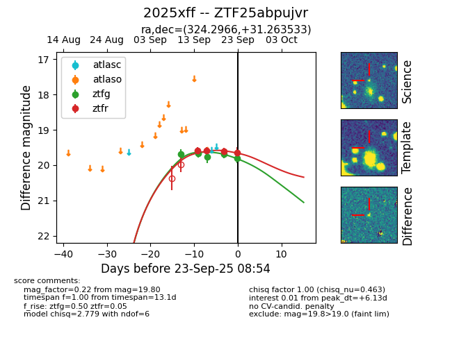
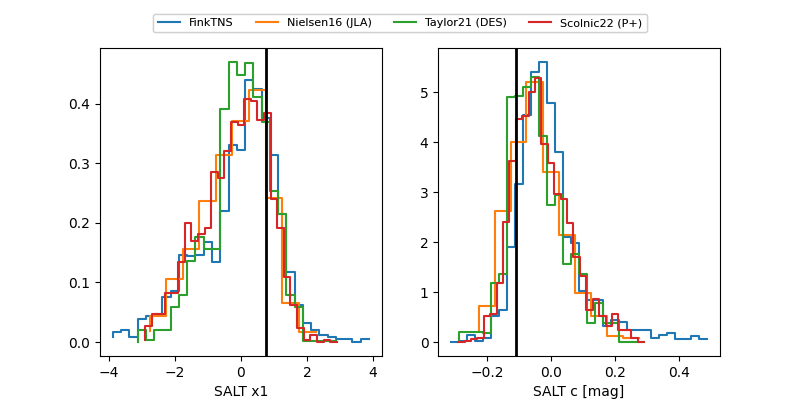

FINK: ZTF25abpujvr
Lasair: ZTF25abpujvr
ALeRCE: ZTF25abpujvr
TNS: 2025xff
YSE: 2025xff
ZTF25abpujvr (ztf,fink)
2025xff (tns,yse)
equatorial (ra, dec) = (324.2966,+31.26353)
galactic (l, b) = (81.2552,-15.47510)


last ztfg=19.80, ztfr=19.64
5 ztfg, 4 ztfr detections